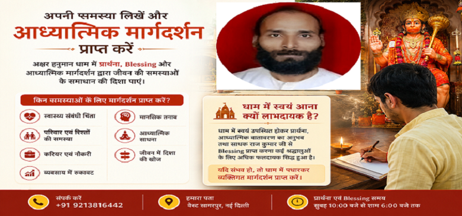

ऑनलाइन प्रश्न भेजना सुविधाजनक है, लेकिन अक्षर हनुमान धाम में स्वयं उपस्थित होकर प्रार्थना, आध्यात्मिक वातावरण का अनुभव तथा साधक राज कुमार जी से Blessing प्राप्त करना कई श्रद्धालुओं के लिए अधिक संतोषजनक अनुभव रहा है।
यदि संभव हो, तो धाम में पधारकर व्यक्तिगत रूप से मार्गदर्शन प्राप्त करें।
नहीं, सेवा श्रद्धानुसार सहयोग पर आधारित है।
हाँ, आप इस पृष्ठ के माध्यम से अपना प्रश्न भेज सकते हैं।
हाँ, प्रार्थना एवं Blessing समय सुबह 10 बजे से शाम 6 बजे तक है।
परिणाम व्यक्ति की परिस्थिति, प्रयास और श्रद्धा पर निर्भर करते हैं।
संपर्क करें